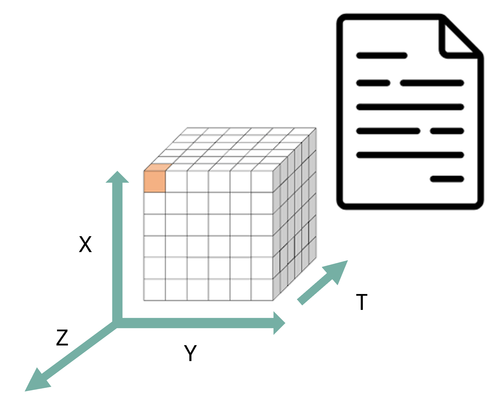

Content from Introduction
Last updated on 2025-12-16 | Edit this page
Overview
Questions
- Why interoperability is important when dealing with research data?
- What are the three layers of interoperability?
- How can you identify if a dataset is interoperable or not?
Objectives
- Understand why interoperability matters in climate & atmospheric science
- Recognize the 3 layers: structural, semantic, technical
- Identify interoperable vs non-interoperable datasets
What is interoperability?
From the foundational article: The FAIR Guiding Principles for scientific data management and stewardship 1
Three guiding principles for interoperability are:
- I1. (meta)data use a formal, accessible, shared, and broadly applicable language for knowledge representation.
- I2. (meta)data use vocabularies that follow FAIR principles
- I3. (meta)data include qualified references to other (meta)data
Assessing how interoperable a dataset is
You receive a dataset containing global precipitation estimates for 2010–2020. Its characteristics are:
- Provided as an NetCDF file.
- Variables have short, cryptic names (e.g.,
prcp,lat,lon). - Metadata uses inconsistent units (some missing).
- Coordinates and grids are documented only in an accompanying PDF.
- The dataset includes a DOI and references two external datasets used for validation.
- No controlled vocabularies or community standards (e.g., CF, GCMD keywords) are used.
Based on the FAIR interoperability principles (I1–I3), how would you rate the interoperability of this dataset?
- High interoperability — it uses a widely supported file format and includes references to other datasets.
- Moderate interoperability — some technical elements exist, but semantic clarity and formal vocabularies are missing.
- Low interoperability — metadata and semantic descriptions do not meet I1–I3 requirements.
- Full interoperability — all three interoperability principles (I1, I2, I3) are clearly satisfied.
Correct answer: B or C depending on the level of strictness, but for educational clarity, choose C.
I1: Not satisfied (no formal/shared language for knowledge representation; heavy reliance on PDF documentation).
I2: Not satisfied (no controlled vocabularies, no standards).
I3: Partially satisfied (qualified references exist, but insufficient context). => Overall, interoperability is low.
Identify the three layers of interoperability
Semantic interoperability = meaning
Semantic interoperability ensures that data carries shared, consistent meaning across institutions and tools. This is achieved through:
- standard vocabularies
- controlled terms
- variable naming conventions
- units
- coordinate definitions
Examples include CF standard names, attributes, and controlled vocabularies. Without semantic interoperability, datasets cannot be reliably interpreted, compared, or combined.
Structural interoperability = representation
Structural interoperability ensures that data is organized, stored, and encoded in predictable, machine-actionable ways. This is achieved through:
common file formats
shared data models
consistent dimension and array structures
Examples include NetCDF, Zarr, and Parquet, which define how variables, coordinates, and metadata are stored. Structural interoperability allows tools across programming languages and platforms to read data consistently.
Technical interoperability = access
Technical interoperability ensures that data can be accessed, exchanged, and queried using standard, machine-readable mechanisms. This is achieved through:
APIs
remote access protocols
web services
cloud object storage interfaces
Examples include OPeNDAP, THREDDS and REST APIs. Technical interoperability enables automated workflows, cloud computing, and scalable analytics.
References
- European Commission (Ed.). (2004). European interoperability framework for pan-European egovernment services. Publications Office.
- European Commission. Directorate General for Research and Innovation. & EOSC Executive Board. (2021). EOSC interoperability framework: Report from the EOSC Executive Board Working Groups FAIR and Architecture. Publications Office. https://data.europa.eu/doi/10.2777/620649
Reflect back on the three guiding principles for interoperability (I1–I3)(Think-Pair-Discuss):
- I1. (meta)data use a formal, accessible, shared, and broadly applicable language for knowledge representation.
- I2. (meta)data use vocabularies that follow FAIR principles
- I3. (meta)data include qualified references to other (meta)data
Do they represent all the three layers of interoperability (structural, semantic, technical)? Explain your reasoning.
FAIR’s interoperability principles emphasize semantic interoperability, while structural and technical layers are insufficiently addressed.
For a domain like climate science—where structural standards like NetCDF-CF and technical standards like OPeNDAP matter enormously, these three guiding principles alone is not enough to guarantee practical interoperability.
Key elements of interoperable research workflows
Interoperable research workflows rely on a set of shared practices, formats, and technologies that allow data to be exchanged, understood, and reused consistently across tools and institutions. In climate and atmospheric science, these elements form the backbone of scalable, reproducible, and machine-actionable data ecosystems.
-
Community formats (NetCDF, Zarr, Parquet) provide a common structural foundation.
These formats encode data in predictable ways, with clear rules about dimensions, variables, and internal structure. NetCDF remains the dominant community standard for multidimensional geoscience data, while Zarr offers a cloud-native representation suitable for large-scale, distributed computing. Parquet complements both by providing an efficient columnar format for tabular or metadata-rich data. Using community formats ensures that tools across languages and platforms can interpret datasets consistently.
-
Standardized metadata (CF conventions) provide the semantic layer needed for meaningful interpretation.
CF conventions define variable names, units, coordinate systems, and grid attributes so that datasets from different sources “speak the same language.” This allows climate model output, satellite observations, and reanalysis products to be aligned and compared reliably.
-
Stable APIs enable technical interoperability by providing machine-readable access to data and metadata.
APIs based on HTTP and JSON allow automated workflows, programmatic data publication, and integration between repositories, processing systems, and analysis tools. A stable, well-documented API ensures that downstream services and scripts continue to function even as data collections evolve.
-
Cloud-native layouts make large datasets scalable and performant.
By storing data as independent chunks in object storage, formats such as Zarr allow parallel, lazy, and distributed access—ideal for big climate datasets, serverless workflows, and AI pipelines. This ensures that even multi-terabyte archives can be streamed efficiently without requiring full downloads.
Together, these elements work as a coordinated system: community formats provide structure, metadata provides meaning, APIs provide access, and cloud-native layouts provide scalability.
This combination is what enables truly interoperable research workflows in general bu specially to modern climate and atmospheric science. Why?
Real world barriers to data interoperability and reuse (Think-Pair-Discuss)
Think of a time when you tried to reuse a dataset that you did not produce. (5 minutes) What was the most significant barrier you encountered?
Pair discussion (5 minutes)
Share your experiences with your partner:
What specific interoperability challenges did you face (structural, semantic, technical)?
How did you try to overcome them?
Would adherence to FAIR I1–I3 principles have helped? If so, how?
Group debrief (5 minutes)
Discuss as a group:
Common obstacles
Whether these were structural, semantic, or technical
How such challenges could be prevented if data producers had designed the dataset with interoperability in mind (e.g., CF conventions, persistent identifiers, shared vocabularies, formal metadata languages)
Specific data challenges in the climate & atmospheric sciences
Heterogeneous data origins: Climate research integrates satellite retrievals, weather models, climate simulations, in-situ sensors, radar, lidar, aircraft measurements, and reanalysis datasets—each with its own structure, conventions, and processing workflows.
Different spatial and temporal resolutions: Satellite images may be daily or hourly at 1 km resolution, while climate models may provide monthly or daily outputs on coarse grids; combining them requires consistent metadata and alignment.
Multiple file formats and data models: Data may come as GRIB, NetCDF, GeoTIFF, HDF5, CSV, or Zarr, each with different structural assumptions that affect processing and interpretation.
Inconsistent metadata quality: Missing units, inconsistent variable names, unclear coordinate systems, or non-standard attributes are frequent issues—making semantic interoperability a major challenge.
Large data volume and velocity: Earth observation missions (e.g., Sentinel, GOES), reanalysis products (ERA5), and high-resolution climate simulations produce terabytes to petabytes of data, making efficient, interoperable access necessary.
Different access mechanisms and services: Data are distributed across portals using APIs, OPeNDAP servers, cloud object storage, FTP, THREDDS catalogs, proprietary download tools, or manual interfaces—requiring technical interoperability to automate workflows.
Versioning and reproducibility issues: Climate datasets evolve frequently (e.g., reprocessed satellite series, new CMIP6 versions), and without stable identifiers or catalog metadata, reproducibility becomes difficult across institutions.
Need for multi-model and multi-dataset comparisons: Studies such as model evaluation, bias correction, and data assimilation depend on aligning diverse datasets that were never originally designed to work together.
Why interoperability is essential
Interoperability is essential in climate and atmospheric science because researchers routinely work with multiple heterogeneous datasets that were never originally designed to work together. By ensuring that data are described consistently, stored in predictable structures, and accessed through standard mechanisms, interoperability makes it possible to combine and reuse data efficiently across research workflows.
First, interoperability enables data reuse: when datasets follow shared metadata conventions and formats, researchers can easily understand what variables represent, how they were produced, and how they can be used in new contexts. This avoids redundant effort and saves time across research groups.
Second, interoperability enables integration across sources—for example, combining model output with satellite observations, radar measurements, in-situ sensors, and reanalysis datasets. These data sources differ in resolution, structure, access method, and semantics; without shared standards, aligning them becomes difficult or impossible.
Third, interoperability reduces friction in data pipelines. Standardized formats, consistent metadata, and machine-actionable APIs allow workflows to run smoothly without manual cleaning, renaming, or restructuring. This is especially critical when handling large, frequently updated datasets typical in climate research.
Finally, interoperability is required for automation, AI, dashboards, and multi-disciplinary science. Machine learning pipelines, automated monitoring systems, and interactive applications rely on consistent, accessible, and machine-readable data. Without interoperability, these tools break or require extensive custom engineering.
In short, interoperability is what makes the diverse, high-volume data ecosystem of climate and atmospheric science usable, scalable, and scientifically trustworthy.
True/False or Agree/Disagree with discussion afterwards
- “As long as data are open access, they are interoperable.”
- “Metadata standards help ensure interoperability.”
- “As long as data is using an open standard format is interoperable”
F,T,F
Discuss with you peer:
Participants inspect a small dataset and answer:
- dataset 1: https://opendap.4tu.nl/thredds/dodsC/IDRA/2019/01/02/IDRA_2019-01-02_quicklook.nc.html
- dataset 2: https://swcarpentry.github.io/python-novice-inflammation/data/python-novice-inflammation-data.zip
- dataset 3: https://opendap.4tu.nl/thredds/dodsC/data2/uuid/9604a1b0-13b6-4f23-bd6c-bb028591307c/wind-2003.nc.html
Participants should identify whether the dataset is interoperable based on the three layers discussed (structural, semantic, technical).
dataset 1: Interoperable - Structure: NetCDF format with clear dimensions and variables. - Metadata: CF-compliant attributes, standard names, units. - Access: OPeNDAP protocol for remote access. dataset 2: Not interoperable - Structure: CSV files with ambiguous column headers. - Metadata: Lacks standardized metadata, unclear variable meanings. - Access: Manual download, no API or remote access. dataset 3: Not Interoperable - Structure: NetCDF format but missing CF compliance. - Metadata: Inconsistent or missing units, unclear variable names. - Access: OPeNDAP protocol
Interoperability ensures that data can be understood, combined, accessed, and reused across tools, institutions, and workflows with minimal manual intervention.
Interoperability operates at three complementary layers:structural (how data is encoded and organized),semantic (how data is described and interpreted), and technical (how data is accessed and exchanged).
The FAIR interoperability principles I1–I3 primarily address the semantic layer. They provide essential guidance on shared metadata languages, vocabularies, and references, but they do not fully cover structural and technical interoperability.
In climate and atmospheric science, all three layers are required for practical reuse. Structural standards (e.g., NetCDF, Zarr), semantic conventions (e.g., CF), and technical mechanisms (e.g., APIs, OPeNDAP, THREDDS) must work together.
Many real-world barriers to reuse datasets (unclear metadata, missing units, inconsistent coordinate systems, incompatible file formats, unstable access mechanisms) are failures of one or more interoperability layers.
Interoperable research workflows rely on established community formats, standardized metadata conventions, stable access protocols, and scalable cloud-native layouts that allow large heterogeneous datasets to be aligned, streamed, and analysed consistently.
Interoperability is essential in climate science because datasets come from diverse sources (models, satellites, sensors, reanalysis) and must be combined into integrated analyses that are reproducible and machine-actionable.
Wilkinson, M. D., Dumontier, M., Aalbersberg, I. J., Appleton, G., Axton, M., Baak, A., … & Mons, B. (2016). The FAIR Guiding Principles for scientific data management and stewardship. Scientific data, 3(1), 1-9.↩︎
Content from Structural interoperability
Last updated on 2025-12-16 | Edit this page
Overview
Questions
What is structural interoperability?
How do open standards and community governance enable structurally interoperable research data?
Which structural expectations must a data format satisfy to support automated, machine-actionable workflows?
Which open standards are commonly used in climate and atmospheric sciences to achieve structural interoperability?
What is NetCDF’s data structure?
Objectives
Explain structural interoperability in terms of data models, dimensions, variables, and metadata organization.
Identify the role of open standards and community-driven governance in ensuring long-term structural interoperability.
Describe the key structural expectations required for automated alignment, georeferencing, metadata interpretation, and scalable analysis.
Analyze a NetCDF file to identify its core structural elements (dimensions, variables, coordinates, and attributes).
What is structural interoperability?
Structural interoperability refers to how data are organized internally, their dimensions, attributes, and encoding rules. It ensures that different tools can parse and manipulate a dataset without prior knowledge of a custom schema or ad-hoc documentation.
In particular for the field of climate & atmospheric sciences, for a dataset to be structurally interoperable:
- Arrays must have known shapes and consistent dimension names (e.g., time, lat, lon, height).
- Metadata must follow predictable rules (e.g., attributes like units, missing_value, long_name).
- Coordinates must be clearly defined, enabling slicing, reprojection, or aggregation.
Structural interoperability answers the question: Can machines understand how this dataset is structured without human intervention?
Structural interoperability relies on open standards
To attain structural interoperability, two key aspects are essential: machine-actionability and longevity. Open standards ensure that these two aspects are met. An open standard is not merely a published file format. From the perspective of structural interoperability, an open standard guarantees that:
The data model is publicly specified (arrays, dimensions, attributes, relationships)
The rules for interpretation are explicit, not inferred from software behavior
The specification can be independently implemented by multiple tools
The standard evolves through transparent versioning, avoiding silent breaking changes
These properties ensure that a dataset remains structurally interpretable even when:
- The original software is no longer available
- The dataset is reused in a different scientific domain
- Automated agents, rather than humans, perform the analysis
Usually these standards are adopted and maintained by a non-profit organization and its ongoing development is driven by a community of users and developers on the basis of an open-decision making process
Formats such as NetCDF, Zarr, and Parquet emerge from broad communities like:
- Unidata (NetCDF)
- Pangeo (cloud-native geoscience workflows)
- Open Geospatial Consortium (OGC) & World Meteorological Organization (WMO)
These groups define formats that encode stable, widely adopted structural constraints that machines and humans can rely on.
Structural Interoperability is about Data Models, not just data formats
Structural interoperability does not emerge from file extensions alone. It is enforced by an underlying data model that defines:
What kinds of objects exist (arrays, variables, coordinates)
How those objects relate to one another
Which relationships are mandatory, optional, or forbidden
Community standards such as NetCDF and Zarr succeed because they define and constrain a formal data model, rather than allowing arbitrary structure.
This is why structurally interoperable datasets can be:
Programmatically inspected
Automatically validated
Reliably transformed across tools and platforms
Structural expectations encoded in open standards (Think-Pair-Discuss)
Which structural expectation are required for:
- automated alignment of datasets along common dimensions (e.g., time, latitude, longitude)
- georeferencing and spatial indexing
- correct interpretation of units, scaling factors, and missing values
- efficient analysis of large datasets using chunking and compression
Automated alignment of datasets along common dimensions , (e.g., time, latitude, longitude)
- Required structural expectation: Named, ordered dimensions
Explanation: Automated alignment requires that datasets explicitly declare:
- Dimension names (e.g.,
time,lat,lon) - Dimension order and length
Open standards such as NetCDF and Zarr enforce explicit dimension definitions. Tools like xarray rely on this structure to automatically align arrays across datasets without manual intervention.
Georeferencing and spatial indexing
- Required structural expectations: Coordinate variables, Explicit relationships between coordinates and data variables
Explanation: Georeferencing depends on the structural presence of coordinate variables that:
- Map array indices to real-world locations
- Are explicitly linked to data variables via dimensions
This enables spatial indexing, masking, reprojection, and subsetting. Without declared coordinates, spatial operations require external knowledge and break structural interoperability.
Correct interpretation of units, scaling factors, and missing values
- Required structural expectation: Consistent attribute schema
Explanation: Open standards require metadata attributes to be:
- Explicitly declared
- Attached to variables
- Machine-readable (e.g.,
units,scale_factor,add_offset,_FillValue)
This allows tools to correctly interpret numerical values without relying on external documentation. While the meaning of units is semantic, their presence and location are structural requirements.
Efficient analysis of large datasets using chunking and compression
- Required structural expectation: Chunking and compression mechanisms defined by the standard
Explanation: Formats such as NetCDF4 and Zarr define:
- How data is divided into chunks
- How chunks are compressed
- How chunks can be accessed independently
This structural organization enables parallel, lazy, and out-of-core computation, which is essential for large-scale climate and atmospheric datasets.
NetCDF
Once upon a time, in the 1980s at University Corporation for Atmospheric Research (UCAR) and Unidata, a group of researchers came together to address the need for a common format for atmospheric science data. Back then the group of researchers committed to this task asked the following question: how to effectively share my data? such as it is portable and can be read easily by humans and machines? the answer was NetCDF.
NetCDF (Network Common Data Form) is a set of software libraries and self-describing, machine-independent data formats that support the creation, access, and sharing of array-oriented scientific data.

Self-describing structure (Structural layer):
- One file carries data and metadata, usable on any system. This means that there is a header which describes the layout of the rest of the file, in particular the data arrays, as well as arbitrary file metadata in the form of name/value attributes.
- Dimensions define axes (time, lat, lon, level).
- Variables store multidimensional arrays.
- Coordinate variables describe spatial/temporal context.
- Attributes are metadata per variable, and for the whole file.
- Variable attributes encode units, fill values, variable names, etc.
- Global attributes provide dataset-level metadata (title,creator, convention,year).
- No external schema is required, the file contains its own structural metadata.
Other useful open standards used in the field
Zarr (cloud-native, chunked, distributed)
Zarr is a format designed for scalable cloud workflows and interactive high-performance analytics.
Structural characteristics:
- Stores arrays in chunked, compressed pieces across object storage systems.
- Supports hierarchical metadata similar to NetCDF.
- Uses JSON metadata that tools interpret consistently (e.g., xarray → Mapper).
- Works seamlessly with Dask for parallelized computation.
Why it matters:
- Enables analysis of petabyte-scale datasets (e.g., NASA Earthdata Cloud).
- Structural rules are community-governed (Zarr v3 specification).
- Allows fine-grained access—no need to download entire files.
Zarr is becoming central for cloud-native structural interoperability.
Parquet (columnar, schema-driven)
Parquet offers efficient tabular storage and is ideal for:
- Station data
- Metadata catalogs
- Observational time series
Structural characteristics:
- Strongly typed schema ensures column-level consistency.
- Supports complex types but enforces stable structure.
- Columnar layout enables fast filtering and analytical queries.
In climate workflows:
- Parquet is used for catalog metadata in Intake, STAC, and Pangeo Forge.
- Structural predictability supports machine-discoverable datasets.
Parquet complements NetCDF/Zarr, addressing non-array use cases.
Identify the structural elements in a NetCDF file
Please perform the following steps to explore the structural elements of a NetCDF file: 1. Open a NetCDF file : https://opendap.4tu.nl/thredds/dodsC/IDRA/2019/01/02/IDRA_2019-01-02_quicklook.nc.html 2. Identify variable metadata 3. Identify the global attributes 4. Identify the dimensions and coordinate variables
- Structural interoperability concerns how data are organized, not what they mean.
- Open standards are essential for machine-actionability and long-term reuse.
- Structural interoperability is enforced by data models, not file extensions.
- Structural interoperability is enforced by data models.
- Standards maintained by communities (e.g. Unidata, Pangeo, OGC/WMO) encode shared structural contracts that tools and workflows can reliably depend on.
- NetCDF exemplifies structural interoperability for multidimensional geoscience data.
Content from Semantic interoperability
Last updated on 2025-12-17 | Edit this page
Overview
Questions
What is semantic interoperability ?
Why is structural interoperability alone insufficient for meaningful data reuse?
How do community metadata conventions (e.g. CF) encode shared scientific meaning?
What does it mean for a NetCDF file to be “CF-compliant”?
Objectives
By the end of this episode, learners will be able to:
Distinguish between structural and semantic interoperability.
Explain why shared vocabularies and conventions are required for machine-actionable meaning.
Describe the role of the CF Conventions in climate and atmospheric sciences.
Apply a CF compliance checker to evaluate how CF-compliant NetCDF files are.
What is semantic interoperability?
Semantic interoperability concerns shared meaning.
A dataset is semantically interoperable when machines and humans interpret its variables in the same scientific way, without relying on informal documentation, personal knowledge, or context outside the data itself. Semantic interoperability answers the question:
“Do we agree on what this data represents?”
This goes beyond structure. Two datasets may both contain a variable
named temp, stored as a float array over time and space,
yet represent:
air temperature at 2 m
sea surface temperature
model potential temperature
sensor voltage converted to temperature
Are these the same quantity? No.
Without semantic constraints, machines cannot reliably compare, combine, or reuse such data.
Why structural interoperability is not enough
Structural interoperability ensures that:
dimensions are explicit,
arrays align,
metadata is machine-readable.
However, structure does not define meaning.
Example:
A NetCDF file may be perfectly readable by xarray. Variables may have
dimensions (time, lat, lon).
Units may be present. Yet machines still cannot know: what physical quantity is represented, at which reference height or depth, whether values are comparable across datasets.
This gap is addressed by semantic conventions, not file formats.
Semantic interoperability via CF Conventions
The Climate and Forecast (CF) Conventions define a shared semantic layer on top of NetCDF’s structural model.
CF specifies, among others:
Standard names: Controlled vocabulary linking variables to formally defined physical quantities (e.g.
air_temperature,sea_surface_temperature)Units: Enforced through UDUNITS-compatible expressions
Coordinate semantics: Meaning of vertical coordinates, bounds, and reference systems
Grid mappings and projections: Explicit spatial reference information
Relationships between variables: For example, how bounds, auxiliary coordinates, or cell methods relate to data variables
By adhering to CF, datasets become semantically interoperable:
A NetCDF file without CF can be structurally interoperable, but it is semantically ambiguous.
A NetCDF file with CF becomes interpretable across tools, domains, and time.
Community governance and ecosystem alignment
Semantic interoperability is not achieved by individual researchers alone.
CF Conventions are:
Developed and maintained by a broad scientific community
Reviewed, versioned, and openly governed
Adopted by major infrastructures and workflows
This shared semantic contract enables: Cross-dataset comparison, automated discovery and filtering and large-scale synthesis and reuse.
Semantic interoperability . True or False?
Indicate whether each statement is True or False, and justify your answer.
A NetCDF file with dimensions, variables, and units is semantically interoperable by default.
CF standard names allow machines to distinguish between different kinds of “temperature”.
Semantic interoperability mainly benefits human readers, not automated workflows.
Two datasets using the same CF standard name can be compared without manual interpretation.
Semantic interoperability can be achieved without community-agreed conventions.
False. Structure alone does not define meaning; semantics require controlled vocabularies and conventions.
True . CF standard names explicitly encode physical meaning, not just labels.
False. Semantic interoperability is essential for automated discovery, comparison, and integration.
True . Shared semantics enable machine-actionable comparability (subject to resolution and context).
False. Semantic interoperability depends on community agreement, not individual interpretation.
CF compliance
A NetCDF file is considered CF-compliant when it adheres to the rules and conventions defined by the CF standard.
The tool IOOS Compliance Checker is a web application that evaluates NetCDF files against CF Conventions based on Python. Its source code is available on GitHub.
Try the Compliance Checker
-
Go to the IOOS Compliance Checker.
- Explore the interface and options.
-
Provide a valid remote OPenNDAP url
- A valid url (endpoint to the dataset, not a html page) :
https://opendap.4tu.nl/hredds/dodsC/+IDRA/year/month/day/filename.nc - For example, use this sample dataset:
https://opendap.4tu.nl/thredds/dodsC/IDRA/2009/04/27/IDRA_2009-04-27_06-08_raw_data.nc - Wrong url (html page):
https://opendap.4tu.nl/thredds/catalog/IDRA/2009/04/27/catalog.html?dataset=IDRA_scan/2009/04/27/IDRA_2009-04-27_06-08_raw_data.nc
- A valid url (endpoint to the dataset, not a html page) :
Click on Submit.
Review and download the report
Semantic interoperability ensures that data variables have shared, machine-actionable scientific meaning, not just readable structure.
Structural interoperability is necessary but insufficient for reliable comparison and reuse across datasets.
The CF Conventions provide a community-governed semantic layer on top of NetCDF through standard names, units, and coordinate semantics.
CF compliance enables automated discovery, comparison, and integration in climate and atmospheric science workflows.
Semantic interoperability depends on community-agreed conventions, not on file formats or variable names alone.
Content from Technical interoperability: Streaming protocols
Last updated on 2026-02-12 | Edit this page
Overview
Questions
- What is technical interoperability?
- What is the DAP (Data Access Protocol)?
- How does OPeNDAP enable remote access without full download?
- What happens when we open a remote NetCDF file using
xarray.open_dataset()? - Why are streaming protocols essential for large-scale scientific workflows?
Objectives
By the end of this episode, learners will be able to:
- Define technical interoperability in the context of scientific data infrastructures.
- Explain how DAP enables interoperable machine-to-machine data access.
- Access a remote NetCDF dataset via OPeNDAP using Python.
- Perform server-side subsetting of variables and dimensions.
- Distinguish between metadata access and actual data transfer.
What is technical interoperability?
Technical interoperability concerns machine-to-machine communication.
A system is technically interoperable when independent systems can exchange and access data through standardized protocols without manual intervention.
If structural interoperability answers:
“Can I read this file?”
Technical interoperability answers:
“Can I access and exchange this data across systems in a scalable way?”
This layer operates below semantics.
It is about transport, protocol, and
infrastructure.
Examples include:
- HTTP
- REST APIs
- OPeNDAP
- OGC services
In scientific data infrastructures, technical interoperability enables remote analysis workflows.
Why file download is not scalable
Large scientific datasets (climate reanalysis, ocean models, satellite archives) often reach:
- Tens of gigabytes
- Terabytes
- Petabytes
Downloading entire files:
- Is inefficient
- Consumes bandwidth
- Duplicates storage
- Breaks reproducibility pipelines
Modern workflows require:
- Remote access
- Server-side filtering
- On-demand subsetting
- Integration into automated pipelines
This is where streaming protocols become essential.
DAP and OPeNDAP
The Data Access Protocol (DAP) is a protocol designed to enable remote access to structured scientific data.
OPeNDAP is a widely adopted implementation of DAP.
DAP allows:
- Access to metadata without full download
- Server-side slicing (e.g., select time range, variable subset)
- Transmission of only requested data
In practice, this means:
You interact with a dataset hosted on a remote server as if it were local — but only the necessary data is transferred.
This is technical interoperability in action.
Hands-on: Accessing NetCDF via OPeNDAP in Python
We now move from concept to practice.
We will use:
xarray- A remote OPeNDAP endpoint
- A NetCDF dataset hosted on a THREDDS server
Step 1 – Open a remote dataset
PYTHON
import xarray as xr
url = "https://opendap.4tu.nl/thredds/dodsC/IDRA/2009/04/27/IDRA_2009-04-27_06-08_raw_data.nc"
ds = xr.open_dataset(url)
dsObserve:
The dataset structure loads immediately.
Dimensions and metadata are visible.
The file has not been fully downloaded.
What happened?
Only metadata and coordinate information were accessed.
Relevance for resarch workflows
Streaming protocols enable:
Scalable climate analysis (ERA5, CMIP6)
AI/ML training pipelines
Reproducible notebooks
Cloud-based workflows
Data repository integration
Technical interoperability ensures that:
Data repositories are not only storage systems, they become computational infrastructure.
Technical interoperability — True or False?
Indicate whether each statement is True or False and justify your answer.
Opening a remote dataset with xarray.open_dataset() automatically downloads the entire file.
DAP enables server-side filtering before data transfer.
Streaming protocols replace the need for structural interoperability.
OPeNDAP works independently of file formats.
Technical interoperability enables automated workflows across infrastructures.
False. Only metadata is accessed initially; data is transferred upon explicit selection.
True. Subsetting occurs on the server before transmission.
False. Technical interoperability depends on structural interoperability.
False. DAP operates on structured data models (e.g., NetCDF).
True. It enables scalable machine-to-machine access.
Technical interoperability enables machine-to-machine data exchange through standardized protocols.
OPeNDAP implements the DAP protocol for remote access to structured scientific datasets.
Remote datasets can be explored without full download.
Server-side subsetting reduces bandwidth and supports scalable workflows.
Streaming protocols transform data repositories into interoperable computational infrastructure.
Content from Technical interoperability: API
Last updated on 2026-02-12 | Edit this page
Overview
Questions
- What is technical interoperability in research data infrastructures?
- What is a REST API?
- How do APIs enable machine-to-machine workflows?
- How do APIs depend on structural and semantic interoperability?
- How can we programmatically manage datasets using the 4TU.ResearchData API?
Objectives
By the end of this episode, learners will be able to:
- Define APIs as mechanisms of technical interoperability.
- Explain core REST concepts (HTTP methods, endpoints, JSON, authentication).
- Interact with a repository API using curl.
- Create and manage dataset metadata programmatically.
- Understand the lifecycle of API-driven data publication.
Technical interoperability and APIs
Technical interoperability concerns how systems communicate.
While structural interoperability ensures that data follow predictable formats (e.g. NetCDF arrays and dimensions) and semantic interoperability ensures shared meaning (e.g. CF conventions), technical interoperability ensures that software systems can reliably exchange data and metadata without human intervention. In practice, technical interoperability is achieved through standardized protocols, of which APIs are the most prominent example.
An API (Application Programming Interface) defines how one system can request services or data from another system in a precise, machine-readable way.
APIs enable:
Automated data retrieval
Programmatic publication of datasets
Distributed processing pipelines
Machine-to-machine workflows
Cross-institutional integration of infrastructures
Then:
APIs operationalize technical interoperability.
REST APIs: core concepts
A REST API is an application programming interface (API) that conforms to the design principles of the representational state transfer (REST) architectural style, a style used to connect distributed hypermedia systems. REST APIs are sometimes referred to as RESTful APIs or RESTful web APIs.
Most modern research data infrastructures expose REST APIs, which rely on widely adopted web standards.
An API defines:
- Endpoints (resources)
- Methods (actions)
- Representations (JSON)
- Authentication (identity)
In the case of repositories, APIs transform repositories from storage platforms into programmable infrastructure.
Key concepts include:
HTTP as the transport protocol (HTTP- HyperText Transfer Protocol)
JSON as a structured, machine-readable representation of metadata (JSON- JavaScript Object Notation)
Stable identifiers for datasets and resources
Versioning to support long-term reuse and evolution of services
Self-describing endpoints, where responses contain sufficient metadata to be interpreted by machines
-
REST methods:
GET – retrieve data or metadata
POST – create new resources
PUT / PATCH – update existing resources
DELETE – remove resources
Relation to structural and semantic interoperability
APIs do not operate in isolation. APIs depend on structural interoperability: JSON responses must follow well-defined schemas.
APIs depend on semantic interoperability: Metadata fields, vocabularies, and controlled terms ensure that machines interpret content consistently.
Without structural and semantic agreement, an API may be technically functional but scientifically meaningless.
Relevance of APIs for climate and atmospheric sciences
Climate and atmospheric research is inherently computational and distributed:
Data volumes are large and continuously growing
Analyses are increasingly automated
Workflows span institutions, models, sensors, and repositories
Reproducibility requires programmatic access
APIs make it possible to build end-to-end interoperable workflows, from data acquisition to publication and reuse, without manual intervention.
API : True or False?
An API guarantees semantic interoperability.
A REST API always uses JSON.
HTTP methods correspond to resource operations.
Without stable identifiers, APIs break reproducibility.
APIs replace the need for structured data formats.
False — semantics depend on shared vocabularies.
False — JSON is common but not required.
True.
True.
False — APIs depend on structure.
Hands on 4TU.ResearchData REST API
The 4TU.ResearchData repository provides a REST API that allows programmatic access to its datasets and metadata. This enables researchers to integrate data publication and retrieval into their automated workflows.
The documentation for the 4TU.ResearchData REST API can be found at: https://djehuty.4tu.nl/
This section could be shown as a live demo or a step-by-step
walkthrough, depending on the audience and format of the lesson. The key
is to demonstrate how to interact with the API using command-line tools
like curl, and to explain the underlying concepts of
RESTful APIs as you go through the examples.
What is curl?
curl stands for Client URL.
It’s a command-line tool that allows you to transfer data to or from a server using various internet protocols, most commonly HTTP and HTTPS.
It is especially useful for making API requests — you can send GET, POST, PUT, DELETE requests, upload or download files, send headers or authentication tokens, and more.
Why curl works for APIs
REST APIs are based on the HTTP protocol, just like websites. When you visit a webpage, your browser sends a GET request and displays the HTML it gets back. When you use curl, you do the same thing, but in your terminal. For example:
curl https://data.4tu.nl/v2/articles This sends an HTTP
GET request to the 4TU.ResearchData API.
Key reasons why curl is used:
It’s built into most Linux/macOS systems and easily installable on Windows.
Scriptable: usable in bash scripts, notebooks, automation.
Supports headers, query parameters, tokens, POST data, etc.
Can output to files (>, -o, -O) or pipe to processors like jq.
How to download a specific file using curl
| Command | Behavior |
|---|---|
curl URL |
Prints file to screen (no saving) |
curl -O URL |
Downloads and saves with original name |
curl -o filename URL |
Downloads and saves with custom name |
curl -L -O URL |
Follows redirects and saves file |
curl -C - -O URL |
Resumes an interrupted download |
Add parameters to the same endpoint to filter results
- Open the documentation: https://djehuty.4tu.nl/ (in-development)
Practicing API calls with
curl
- Show in the screen the metadata of 2 datasets published since May
1st 2025 using
curlandjqto format the output. - Save the information of 2 datasets published since May 1st 2025
using
curlto a file calleddata.jsonin the current directory. - Show in the screen the metadata of 10 software published since January 1st 2025.
Get all the files per dataset ID
BASH
curl "https://data.4tu.nl/v2/articles/03c249d6-674c-47cf-918f-1ef9bdafe749/files" | jq # /v2/articles/uuid/filesManaging identities
Create the .env file and copy your private token there
Follow these instructions to create the .env file and copy your private token there:
- Open your profile in the 4TU.ResearchData website (www.next.data.4tu.nl) and go to the “Create API token” section , next to the “My Dashboard” section, to create a new token if you don’t have one already.
- Save the new token and copy it to your clipboard.
- Create a .env file in the root of your project .
- Open the .env file in a text editor and add the following line:
- Check that the token is loaded correctly by running:
- Activate the .env file in your terminal session:
Upload Datasets (POST Requests)
Basic Upload of metadata to a draft dataset
BASH
curl -X POST https://next.data.4tu.nl/v2/account/articles --header "Authorization: token ${API_TOKEN_NEXT}" --header "Content-Type: application/json" --data '{ "title": "Dataset RDM session", "authors": [{ "first_name": "Leila", "full_name": "Leila Inigo", "last_name": "Inigo", "orcid_id": "0000-0003-4324-5350" }] }' | jqAdding an author to the draft dataset
- First we need to copy the uuid of the draft dataset created in the previous step in the next.data.4tu.nl website
BASH
curl -X POST "https://next.data.4tu.nl/v2/account/articles/UUID/authors" --header "Authorization: token ${API_TOKEN_NEXT}" --header "Content-Type: application/json" --data '{ "authors": [{ "first_name": "John", "full_name": "Doe", "last_name": "Doe", "orcid_id": "0000-0303-4524-5350" }] }' | jqUpload to the repository
BASH
yq '.' example_metadata.yaml | curl -X POST https://next.data.4tu.nl/v2/account/articles -H "Authorization: token ${API_TOKEN_NEXT}" -H "Content-Type: application/json" -d @-- Command explanation:
yq '.' example_metadata.yaml : Converts
example_metadata.yaml into JSON
yq is a command-line tool to read/manipulate YAML (like jq is for JSON).
'.'means “read the full YAML structure as-is”.
-d @-
-dsends data in the body of the POST request.@-means: read the request body from stdin (standard input), i.e., the piped-in JSON from yq.
File upload
BASH
curl -X POST "https://next.data.4tu.nl/v3/datasets/dataset-id/upload" --header "Authorization: token ${API_TOKEN_NEXT}" --header "Content-Type: multipart/form-data" -F "file=@absolute-path-to-the-file"After this command you will realize that need a least a file to submit for review
Now lets take the
uuidof the draft just created in the previous example and put it in the endpointFor tha data , first download the data using
curlfrom a GitHub repository:
Submit for review
BASH
yq '.' example_metadata.yaml | curl -X PUT "https://next.data.4tu.nl/v3/datasets/UUID/submit-for-review" --header "Authorization: token ${API_TOKEN_NEXT}" --header "Content-Type: application/json" --data @-APIs operationalize technical interoperability by enabling standardized machine-to-machine interaction.
REST APIs use HTTP methods, predictable endpoints, JSON representations, stable identifiers, and authentication mechanisms.
APIs depend on structural interoperability (schemas) and semantic interoperability (controlled vocabularies).
Command-line tools such as curl provide direct access to API functionality and enable automation.
The 4TU.ResearchData API supports full dataset lifecycle management: discovery, creation, metadata update, file upload, and submission for review.
Content from Cloud-Native Layouts
Last updated on 2026-02-12 | Edit this page
Overview
Questions
- What does “cloud-native” mean in the context of scientific data?
- Why can NetCDF struggle in cloud environments?
- How is Zarr different from NetCDF?
- Which part of interoperability is affected by cloud-native layouts?
Objectives
- Explain what makes a data format cloud-native.
- Compare NetCDF and Zarr from a cloud-access perspective.
- Identify how cloud-native layouts influence structural interoperability.
- Create a virtual Zarr dataset from NetCDF using Kerchunk.
Cloud-Native Layouts
What Does “Cloud-Native” Mean?
Cloud-native data layouts are designed for:
- Object storage (e.g., S3-compatible systems)
- Access over HTTP
- Parallel reads
- Loading only the pieces of data you need (lazy access)
In climate science, datasets such as:
- ERA5 (ECMWF reanalysis dataset)
- CMIP6 (climate model intercomparison dataset)
are often terabytes to petabytes in size.
Typical workflows include:
- Reading a single variable
- Selecting one time slice
- Extracting a spatial subset
- Repeating this many times (e.g., for machine learning)
A cloud-native layout makes these repeated small reads efficient.
NetCDF vs Zarr (Cloud Perspective)
NetCDF
NetCDF (Network Common Data Form) is a widely used scientific data format.
Designed for:
- HPC systems
- Large files on shared storage
- Sequential or file-based access
In the cloud:
- Stored as a single binary file
- Harder to parallelize over HTTP
- Repeated slicing can be inefficient
NetCDF provides strong structural interoperability in traditional
computing environments —
but it is not optimized for object storage systems.
Zarr
Zarr is a chunked, cloud-optimized array storage format.
Designed for:
- Object storage
- Many small chunks
- Parallel HTTP access
Data is stored as:
- Small chunk files
- JSON metadata
- A directory-like structure compatible with cloud object stores
Advantages in the cloud:
- Read only the chunks you need
- Many workers can read simultaneously
- Efficient for repeated slicing
Zarr is therefore considered cloud-native.
What Changes in Interoperability?
Cloud-native layouts mainly affect: Structural Interoperability
They change:
- How data is physically organized
- How it is accessed
- How scalable it is
They do not automatically change:
- Variable names
- Units
- Coordinate conventions
That part belongs to semantic interoperability, which still relies on:
- CF conventions
- Agreed metadata standards
So:
- NetCDF → structural interoperability (file-based)
- Zarr → structural interoperability (cloud-native)
Both can support semantic interoperability —
but only if metadata conventions are respected.
Relevance for climate workflows
Climate analysis increasingly runs in:
- Cloud notebooks
- Distributed systems
- Data-proximate compute environments
Cloud-native layouts:
- Reduce unnecessary data movement
- Enable scalable parallel processing
- Support interactive analysis of very large datasets
They allow structural interoperability to scale to modern data volumes.
Hands-on session
In this hands-on session, we will use the Kerchunk library to create a virtual Zarr dataset from an existing NetCDF file. This allows us to access the NetCDF data in a cloud-native way without physically converting the file.
Goal
Create a cloud-native representation of an existing NetCDF file
without rewriting or duplicating the data.
What is Kerchunk?
Kerchunk is a Python library that creates a virtual Zarr
dataset
from existing formats such as NetCDF or HDF5.
Instead of converting the file physically, Kerchunk:
- Scans the original NetCDF file
- Maps byte ranges to Zarr-style chunk references
- Writes a small JSON reference file
This JSON file behaves like a Zarr store.
Result:
- No data duplication
- No heavy conversion
- Immediate cloud-compatible access
Kerchunk improves structural interoperability
by making legacy NetCDF archives accessible in cloud-native
workflows.
Step 1: Create a Kerchunk reference
This creates a small JSON file describing how the NetCDF file can be accessed as a Zarr dataset.
PYTHON
import json
import fsspec
from kerchunk.hdf import SingleHdf5ToZarr
filename = "https://opendap.4tu.nl/thredds/dodsC/IDRA/2009/04/27/IDRA_2009-04-27_06-08_raw_data.nc"
with fsspec.open(url, mode="rb") as f:
h5chunks = SingleHdf5ToZarr(f, url)
reference = h5chunks.translate()
with open("example_reference.json", "w") as f:
json.dump(reference, f)
Step 2 : Open as virtual Zarr
PYTHON
import xarray as xr
ds = xr.open_dataset(
"example_reference.json",
engine="zarr",
backend_kwargs={"consolidated": False}
)
ds
You now have a Zarr-style dataset without converting the original NetCDF file.
Step 4 : Perfrom lazy slicing
Notice that: Data is loaded lazily and only the required chunk is accessed.
It is the same dataset, same metadata but a different structural layout which offers better scalability in cloud environments.
Cloud-native layouts are optimized for object storage and HTTP access.
NetCDF works well on HPC systems but is not optimized for cloud-native access.
Zarr stores data in chunks, enabling efficient parallel reads in cloud environments.
Kerchunk enables cloud-style access to existing NetCDF archives without data duplication.
Cloud-native layouts mainly influence structural interoperability, while semantic interoperability still depends on metadata standards such as CF conventions.
Content from Interoperable Infrastructure in the AI Era
Last updated on 2026-02-12 | Edit this page
Overview
Questions
- What does “AI-ready” mean in the context of climate data infrastructures?
- Why is interoperability a prerequisite for trustworthy AI?
- Which infrastructural components enable AI at scale?
Objectives
- Explain what makes a data infrastructure AI-ready.
- Connect AI requirements to structural, semantic, and technical interoperability.
- Identify infrastructural components that enable scalable and reproducible AI workflows.
Why talk about AI in an interoperability course?
Artificial Intelligence and machine learning are increasingly applied to:
- Climate simulations
- Earth observation data
- Extreme event prediction
- Downscaling and bias correction
- Environmental monitoring
However, AI systems do not operate on raw data alone.
They depend on infrastructure — and that infrastructure must be
interoperable.
Without interoperability, AI pipelines become fragile, non-reproducible, and non-scalable.
What does AI need from data infrastructure?
AI workflows in climate science typically require:
1. Large-scale multidimensional datasets
- NetCDF or Zarr
- High spatial and temporal resolution
- Petabyte-scale archives
2. Consistent semantic metadata
- CF-compliant variables
- Clear units
- Well-defined coordinate systems
- Machine-readable descriptions
Typical challenges
Many repositories were not designed with AI in mind. Common obstacles include:
- Data fragmentation across portals
- Non-standard variable naming
- Missing or inconsistent metadata
- Download-only workflows (no API access)
- Lack of dataset versioning
- Poor documentation
These issues break automation and reduce reproducibility.
Key elements of an AI-ready interoperable infrastructure
An AI-ready infrastructure builds on all interoperability layers:
Structural interoperability
- Community formats (NetCDF, Zarr)
- Cloud-native layouts
- Chunked multidimensional storage
Semantic interoperability
- CF conventions
- Controlled vocabularies
- Standard coordinate systems
- Clear provenance metadata
Technical interoperability
- REST APIs
- STAC catalogs
- Persistent identifiers (DOI, URIs)
- Authentication mechanisms
- Dataset versioning
When these layers align, AI systems can:
- Discover datasets automatically
- Load them efficiently
- Interpret variables correctly
- Combine sources consistently
- Reproduce experiments
Interoperability enables AI
Interoperability determines whether AI workflows are:
-
Efficient — scalable data loading and
processing
-
Reproducible — same dataset, same version, same
metadata
-
Integrable — multiple datasets combined
coherently
- Trustworthy — transparent provenance and standards
AI performance is not only about model architecture.
It is also about data quality and infrastructure design.
Example: FAIR Earth Observation initiatives
Projects such as FAIR-EO (FAIR Open and AI-ready Earth
Observation resources)
(https://oscars-project.eu/projects/fair-eo-fair-open-and-ai-ready-earth-observation-resources)
aim to align:
- FAIR principles
- Earth observation standards
- AI-ready infrastructures
The focus is not just making data open , but making it machine-actionable and interoperable at scale.
- AI-ready infrastructures require interoperable data layers.
- Structural, semantic, and technical interoperability jointly enable AI workflows.
- Cloud-native formats and consistent metadata are essential for scalable AI.
- APIs, catalogs, identifiers, and versioning ensure reproducibility and automation.
- AI reliability depends as much on infrastructure design as on model quality.